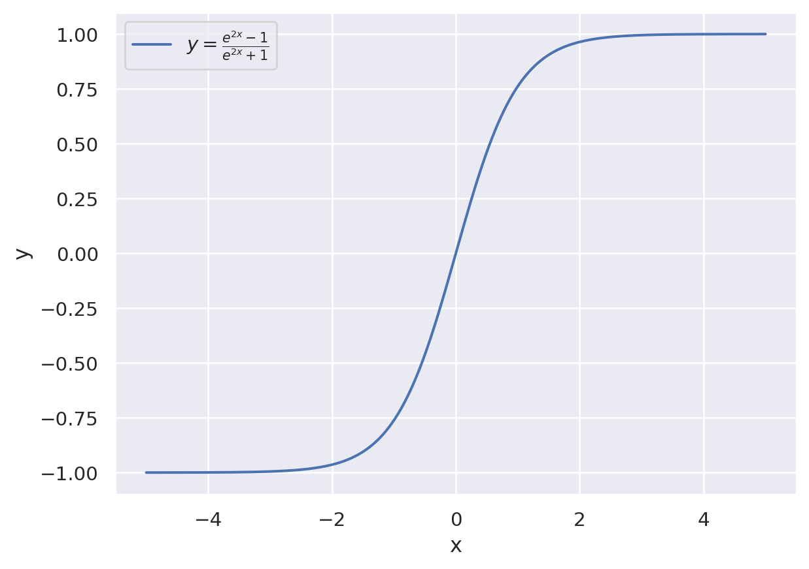
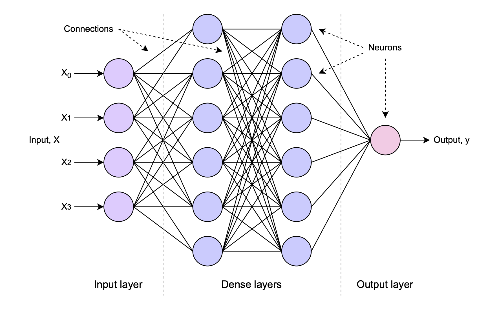
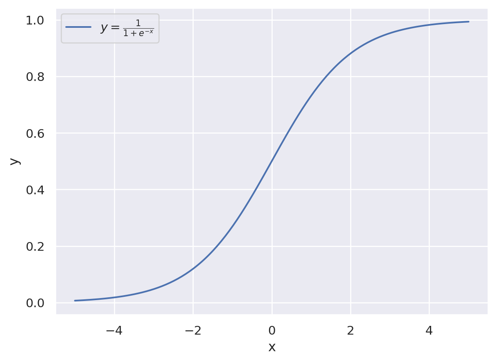
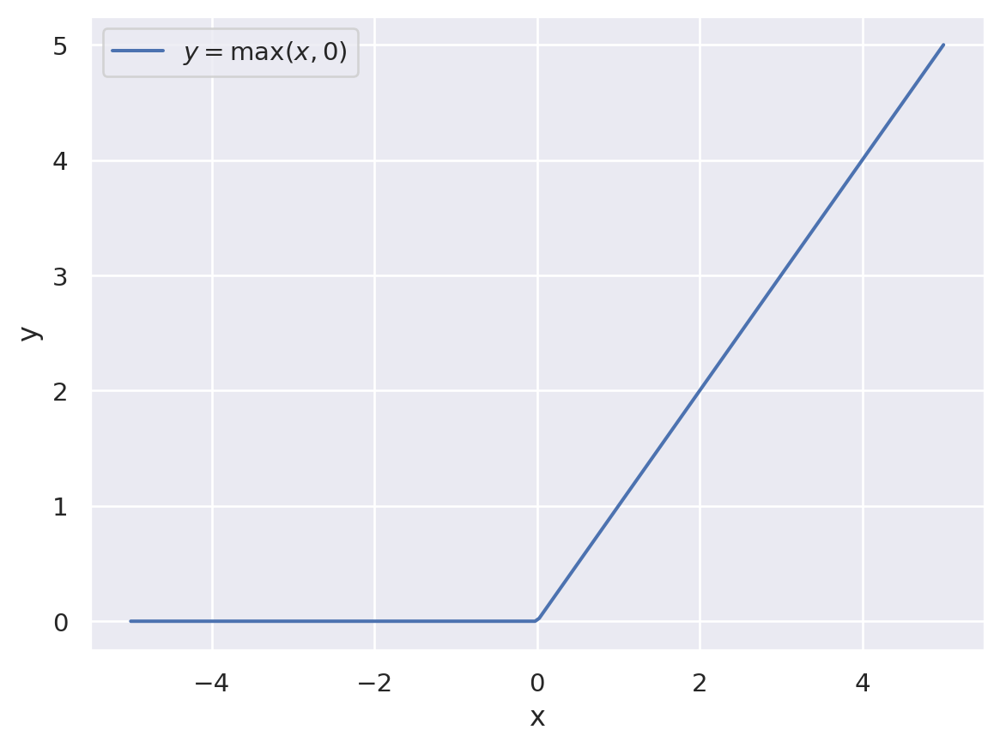
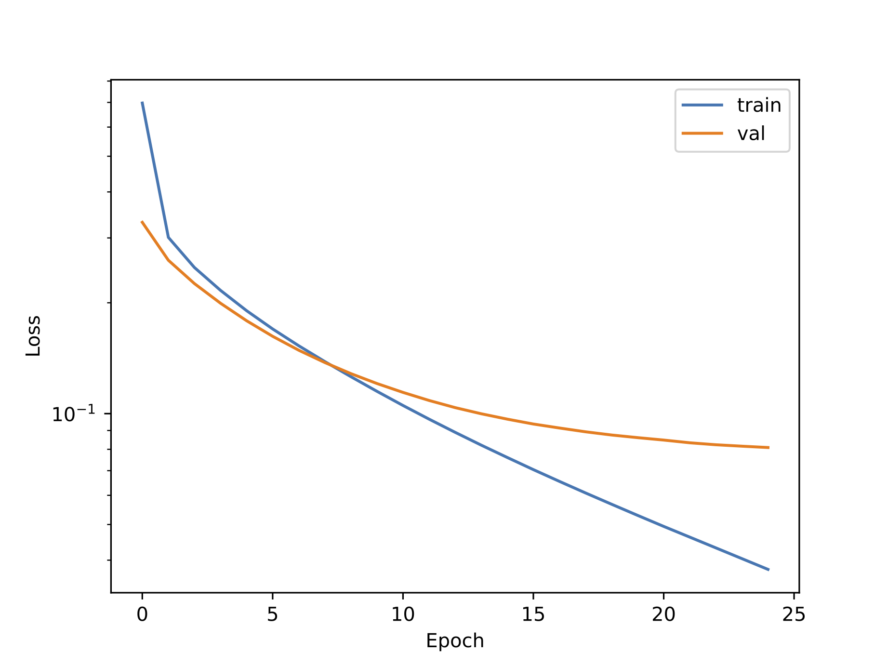

7 Neural Networks
An artifical neural network (ANN) is an interconnected collection of nodes or neurons, inspired by the human brain. Each neuron can receive input from many other neurons, performs some relatively simple processing, and then sends its output to one or many other neurons. Through careful choice of the processing performed by each neuron, the topology of the network, and advanced optimisation methods, the ANN can be trained to perform highly sophisticated processing tasks.
7.1 Anatomy of a Neural Network

Most ANNs are known as ‘feed-forward’ neural networks. This means the computation flows in one direction, from inputs to outputs. The neurons in an ANN are typically arranged in layers. The first layer receives the input data, and the final layer produces the output data. The dimensionality of the input and output layers will be determined by the shape of the input and output data. Typically there are a number of hidden layers between the input and output layers, for which the dimensionality is much less constrained - for example, the number of nodes can be greater than that of the input and output layers.
7.1.1 Neurons
Each neuron processes input data according to a relatively simple function. The most simple neuron comprises a linear function of the inputs, followed by an activation function. The output can be written :
\[ y = f\left(\sum_{i=0}^{n}{\alpha_i x_i + \beta_i} \right) \]
where \(\alpha_i\) are known as the weights, \(\beta_i\) are the biases, \(x_i\) are the inputs to the neuron, and \(y\) is the neuron output. The function \(f()\) is known as the activation function.
Note that in the discussion below, we will sometimes refer to the collection of weights \(\alpha\) and biases \(\beta\) as just the weights, \(\theta\).
In more advanced ANNs, neurons may implement different functions. For example, the sum over inputs may be replaced by another function.
7.1.2 Connections
The connectivity between layers must be defined. Fully interconnected layers (such as the hidden layers in the diagram above) offer the most flexibility, since the weights associated with connections that are not required will tend to zero during training. However, the computational cost of such ‘dense layers’ may be excessive. Depending on the application, some layers in the ANN will not be fully connected. In image processing, for example, the input layers typically contain connections between nodes that corresponds to adjacent, or nearby, pixels.
7.1.3 Hyperparameters
The hyperparameters of a network are all the parameters which are not directly optimised during training. For example, this may include architectural parameters such as the number of layers and number of neurons per layer. It also includes parameters such as learning rate, drop out fraction (see Section 7.5.2), etc.
For a network to be fully optimised for a given problem, the hyperparameters must be optimised, as well as the weights. There are a number of techniques for achieving this, some of which are automated, others rely on scanning parameters by hand.
7.1.4 Deep Learning
Deep learning is jargon which refers to the used of multiple ‘hidden’ layers. These layers allow hierarchical feature extraction. Any network which includes multiple hidden layers between the input and output may be referred to as deep learning. Such networks are no ubiquitous.
7.2 Activation
The choice of activation function is important. If the activation function is a linear function, then the neural network is reduced to linear regression, i.e. the output of the ANN is a linear function of the ANN inputs. To capture more sophisticated features, it is important that the activation function provides some non-linearity.
Some typical activation functions are described below.
7.2.1 tanh function
The hyperbolic tan function is defined as : \[ y = {\rm tanh}(x) = \frac{e^{2x}-1}{e^{2x}+1} \]
And plotted in the figure below.
This function maps an input range of \([-\infty, \infty]\) onto an output range of \([-1, 1]\). This ensures values do not grow unmanageably large as data propagates through the network, independent of weight magnitude. A linear combination of such functions can approximate a wide range of functions.
7.2.2 Sigmoid function
The sigmoid function is another name for the logistic function.
\[ y=\frac{1}{1+e^{-x}} \]

This function maps inputs on \([-\infty, \infty]\) onto outputs on \([0, 1]\). For this reason, the sigmoid is often chosen for classification problems, where the function value is treated as a probability of the data belonging to a given class. (See section on logistic regression).
7.2.3 Rectified Linear (ReLU) function
The ReLU function is :
\[ \begin{align} y = \, &x \quad (x \gt 0) \\\\ &0 \quad(x \le 0) \end{align} \]
Or, equivalently,
\[ y = \rm{ max}(x, 0) \]

The ReLU function maps \([-\infty, \infty]\) onto \([0, \infty]\). It is easily computed, and does not suffer from the “vanishing gradient problem” (see later in the unit).
7.2.4 Softmax
Unlike the activations functions above, this function returns mutiple values. It is typically used in the final layer of a classifier network, where it will normalise multiple probabilistic class scores, such that the sum over all classes is equal to 1. For \(n\) input values, the function is defined by :
\[ y_j=\frac{e^{x_j}}{\Sigma_{i=0}^n e^{x_i}} \]
7.3 Training
Neural networks can be used in both supervised and unsupervised learning scenarios. Here we will focus on supervised learning, where the network weights are optimised using a dedicated training sample. This sample must contain “ground truth” information. Typically this sample is accompanied by a statistically separate “validation” sample, which can be used to check the performance of the network, but which is not used to train the weights.
7.3.1 Forward Pass
In a feed-forward neural network, the input data is fed into the input layer, and the output of each layer of neurons is computed in turn until the output of the final layer is obtained. This output is treated as a prediction. The loss can then be calculated by comparing the prediction with the ground truth contained in the training sample.
7.3.2 Backpropagation
In order to train a neural network, we need to compute the gradient of the loss \(L\) with respect to the weights \(\theta\), ie. \(\nabla L\). Backpropagation is an efficient method for achieving this.
As an example, we can consider a network comprising a single node, with the loss defined as mean squared error. We can write the loss in terms of the weights, as follows :
\[ \begin{align} L&=(\hat{y}-y)^2 \\\\ \hat{y}&=f(z) \\\\ z&=\alpha x + \beta \end{align} \]
It should be clear that the derivative of the loss with respect to the weight, \(\alpha\), can now be computed using the chain rule :
\[ \frac{\partial L}{\partial \alpha} = \frac{\partial L}{\partial \hat{y}} \frac{\partial \hat{y}}{\partial z} \frac{\partial z}{\partial \alpha} \]
Note that in backpropagation, we are not trying to find a closed-form solution for the derivative, but just to establish an efficient method for computing the numerical values.
\[ \begin{align} \frac{\partial L}{\partial \hat{y}} &= 2(\hat{y}-y) \\\\ \frac{\partial z}{\partial \alpha} &= x \end{align} \]
Hence
\[ \frac{\partial L}{\partial \alpha} = 2(\hat{y}-y) f'(z) x \]
And similarly :
\[ \frac{\partial L}{\partial \beta} = 2(\hat{y}-y) f'(z) \]
Provided the derivative of the activation function, \(f'(z)\) is known, we note that the the derivative of the loss can be computed directly from terms calculated during the forward pass.
Now consider a network comprising multiple layers. We will denote the output (aka activation) of the \(i\)-th layer as \(a_i\), with corresponding subscripts on weights and biases. So the final layer of an \(n\) layer network can be written :
\[ a_n = f(\alpha_n a_{n-1} + \beta_n) \]
The derivative of the loss for this final layer, remains as above :
\[ \begin{align} \frac{\partial L}{\partial \alpha_n} &= 2(a_n-y) f'(z_n) a_{n-1} \\\\ \frac{\partial L}{\partial \beta_n} &= 2(a_n-y) f'(z_n) \end{align} \]
For the previous layer, we must expand \(a_{n-1}\) using the activation function of that layer, ie.
\[ a_{n-1} = f(\alpha_{n-1}a_{n-2} + \beta_{n-1}) \]
Which means the derivative of the loss with respect to weights in this \((n-1)\)-th layer becomes :
\[ \frac{\partial L}{\partial \alpha_{n-1}} = \frac{\partial L}{\partial a_n} \frac{\partial a_n}{\partial z_n} \frac{\partial z_n}{\partial a_{n-1}} \frac{\partial a_{n-1}}{\partial \alpha_{n-1}} \]
which can again be written in terms that are computed during the forward pass :
\[ \frac{\partial L}{\partial \alpha_n} = 2(a_n-y) f'(z_n) \alpha_n x_{n-2} \]
or more simply
It should now be clear that we can compute all partial derivatives of the loss with respect to each weight, by starting with the final layer and working backwards. Hence the term backpropagation.
7.4 Gradient Descent
This is a basic method for minimising the loss. Starting from a random set of weights, the gradient (\(\nabla L\)) is computed and then a new set of weights is generated by taking a “step” in the direction of the negative gradient. Algebraically :
\[ \theta_{new} = \theta_{old} - \kappa \nabla L \]
where \(\theta\) refers to the full set of weights \(\alpha\) and biases \(\beta\). The learning rate, \(\kappa\) is a parameter which controls the length of the step, ie. how far the new set of weights is from the previous set.
Many NN training methods rely on a version of gradient descent. We can compute the gradient using backpropagation over the full training sample. (This is usually what is implied when we talk about “gradient descent”). The term “epoch” is used to describe processing the full training sample, so in this case the weights are updated once per epoch. However, this is generally very computationally expensive and more efficient methods are often used.
7.4.1 Stochastic Gradient Descent
In this version of gradient descent, we compute the gradient and a new set of weights every time we process a new data point in the training sample. This means the weights vary significantly from one data point to the next, but after processing many data points, the weights will converge on a minimum in the loss.
7.4.2 Batch Gradient Descent
In this version, also known as “mini-batch gradient descent”, a new set of weights is computed using a “batch” of \(n\) data points. This method is probably used most frequently, since the batch size can be optimised to reduce the computational cost of training.
7.4.3 Adaptive Learning Rate
Adaptive learning is a method for minimising the computational cost of training. In gradient descent, a large learning rate is preferable initially, when the loss minimum is far from the current point in weight space. However, as the weights get closer to optimal, a small learning rate is preferable, to reduce the chance of overshooting the true minimum. Adaptive learning algorithms adjust the learning rate to account for this, and many versions exist.
A simple version is just to reduce the learning rate after a fixed number of epochs.
AdaGrad is a more sophisticated algorithm, which includes a learning rate for each individual weight. The algorithm keeps a running sum of the gradient squared per parameter :
\[G_j = \sum \left( \frac{\partial L}{\theta_j} \right) ^2\]
The learning rate for each parameter is scaled by \(1 \diagup G_j\).
AdaGrad is sometimes found to reduce the learning rate too agressively in the final steps of training. Adam is an enhancement which optimises the learning rate, again on a per-weight basis, using rolling sums of both the gradient and gradient squared.
7.5 Overfitting in Neural Networks
As discussed in Section 6.9, to avoid overfitting it is useful to monitor the loss as it evolves during training. Typically we monitor both the loss computed on the training dataset, and the loss computed on the validation dataset, as shown in Figure 7.2.

In this example, we can see the training loss continues to decline, even after the validation loss has reached a plateau, and by the final epoch the model is clearly overfitted.
7.5.1 Early Stopping
The overfitting observed above may be avoided by detecting the plateau in validation loss, and stopping training early. Early stopping conditions are typically that the validation loss has not improved or gotten worse, within some tolerance, over a given number of epochs.
Frequently, early stopping is used in conjunction with reverting weights to the set that gave the minimum loss.
7.5.2 Dropout
Dropout is a regularisation technique specially devised for neural networks. Here, in each epoch, a random set of nodes are selected and their output is set to zero. As a result, their weights are not trained in that epoch. The output of the active neurons are scaled up to account for the missing ones.
This technique effectively means that a random selection of neurons are not trained in each epoch, which reduces the dependence of the overall loss on a particular set of neurons. Or equivalently, it reduces the dependence on a particular set of features in the data.
7.6 Programming Neural Networks
There are several libraries in common use for neural network development, including PyTorch, Tensorflow, Keras, JAX. In this unit we will focus on PyTorch, which is an open source library originally developed at EPFL Lausanne, and subsequently by Facebook/Meta. Since 2022 it has been managed by the Linux Foundation.
The examples accompanying these lecture notes provide an introduction to machine learning with neural networks in PyTorch. Instructions for installing PyTorch can be found here : https://pytorch.org/get-started/locally/